PARETO User Interface
Step by step guide to using PARETO'S user interface.
PARETO helps organizations better manage, better treat, and - where possible - beneficially reuse produced water from oil and gas operations.
Step 1: Download the latest version of PARETO for your operating system at https://www.project-pareto.org/software/.
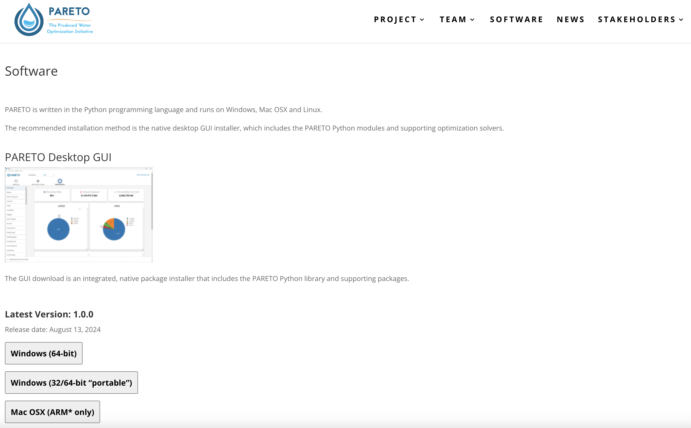
Step 2: Follow the installation steps to install the application. For windows, see below:
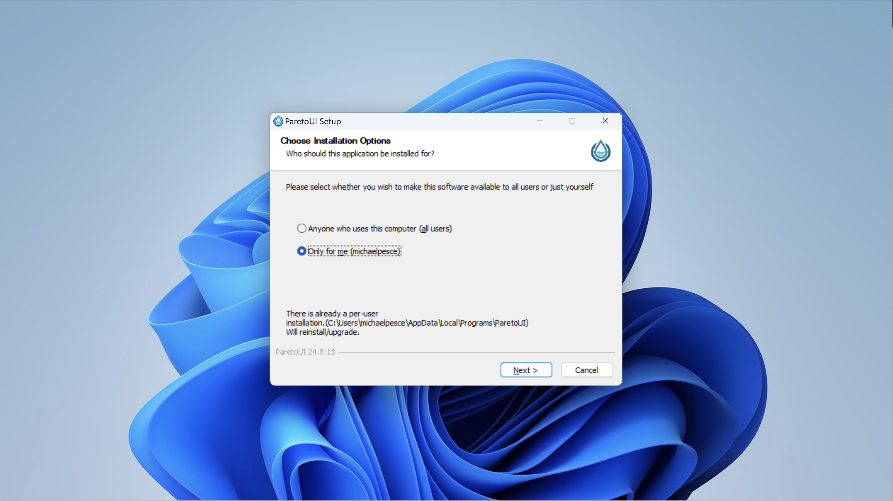
Step 3: Run the application, you should see a splash page before being redirected to the scenarios page:
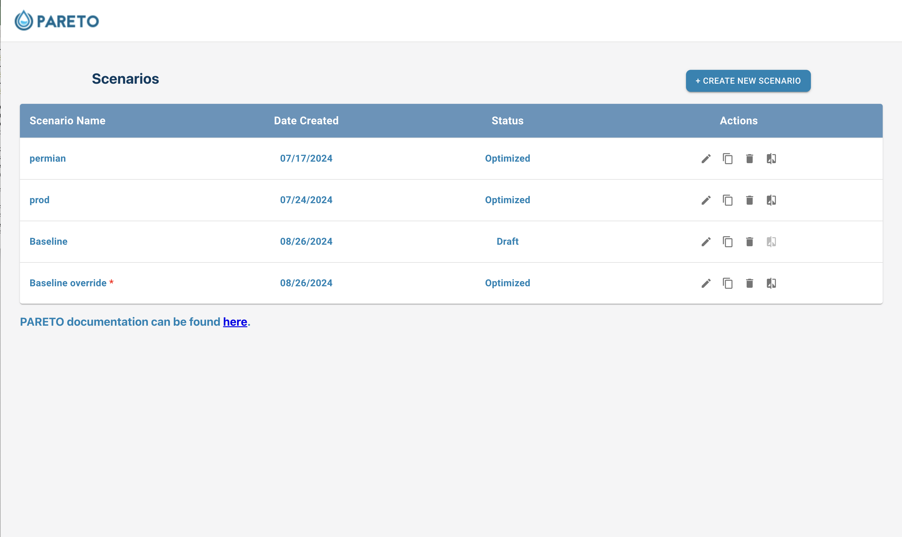
Step 4: Click on "Create new scenario". Download from one of the available sample inputs, name the scenario, and click "Create scenario":
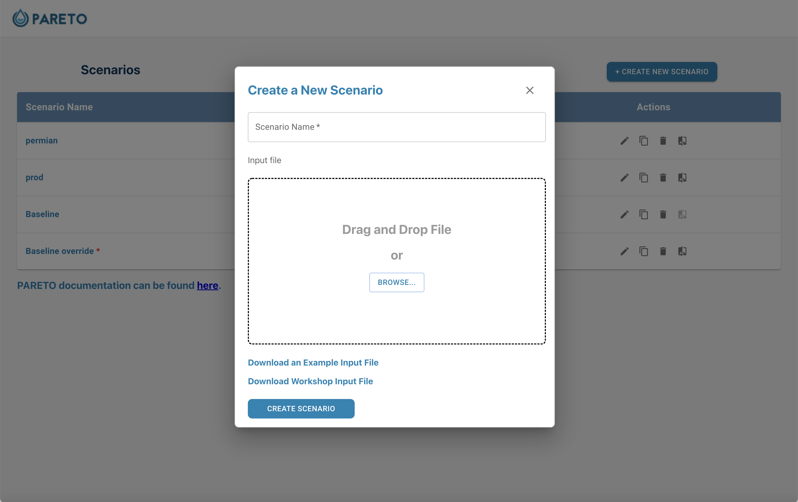
Step 5: Browse the input plots and tables, with the option to edit any of the inputs:
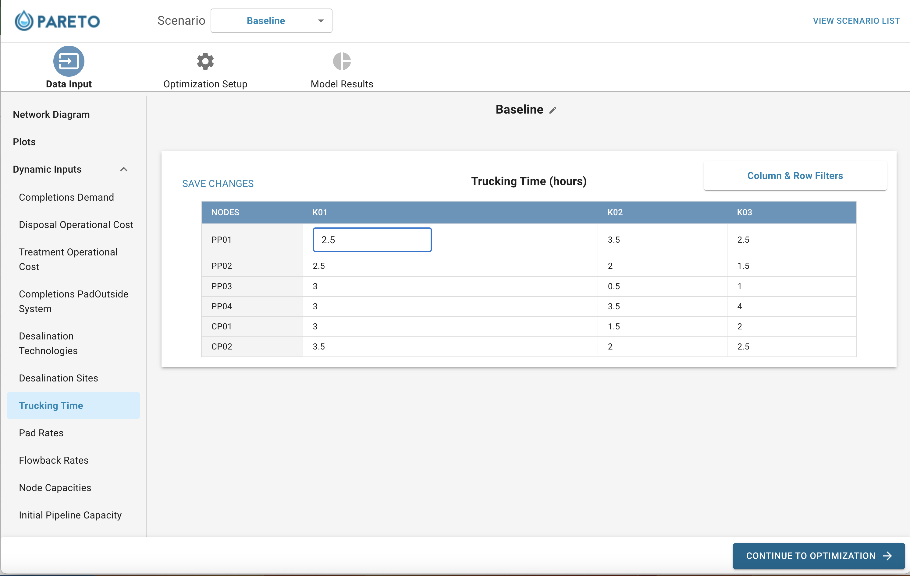
Step 6: Click the "optimization setup" button, and choose from our model settings. If you have a gurobi license, select "gurobi" from the solver options:
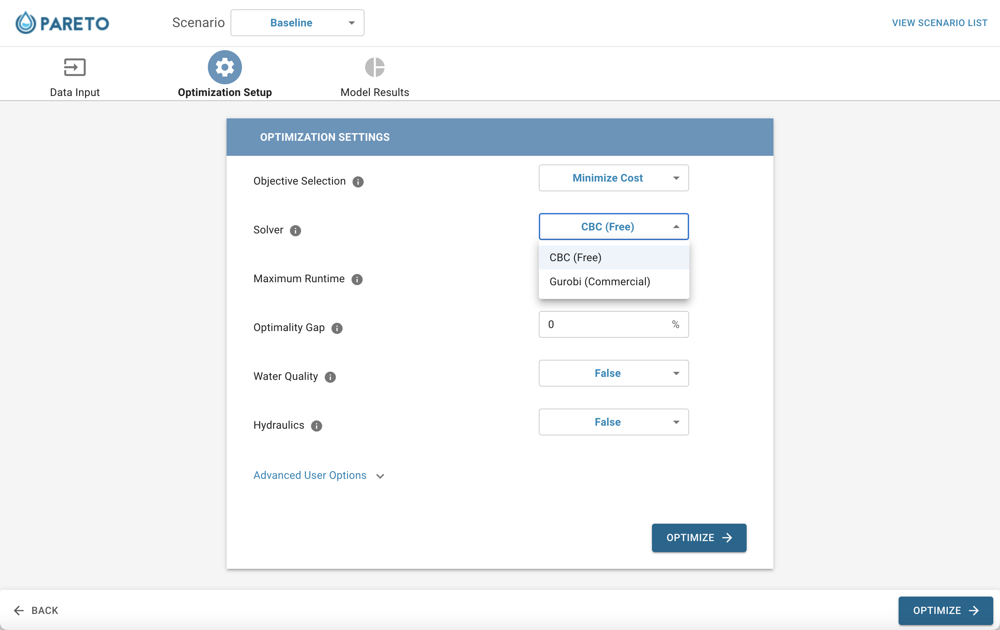
Step 7: Click "run model":
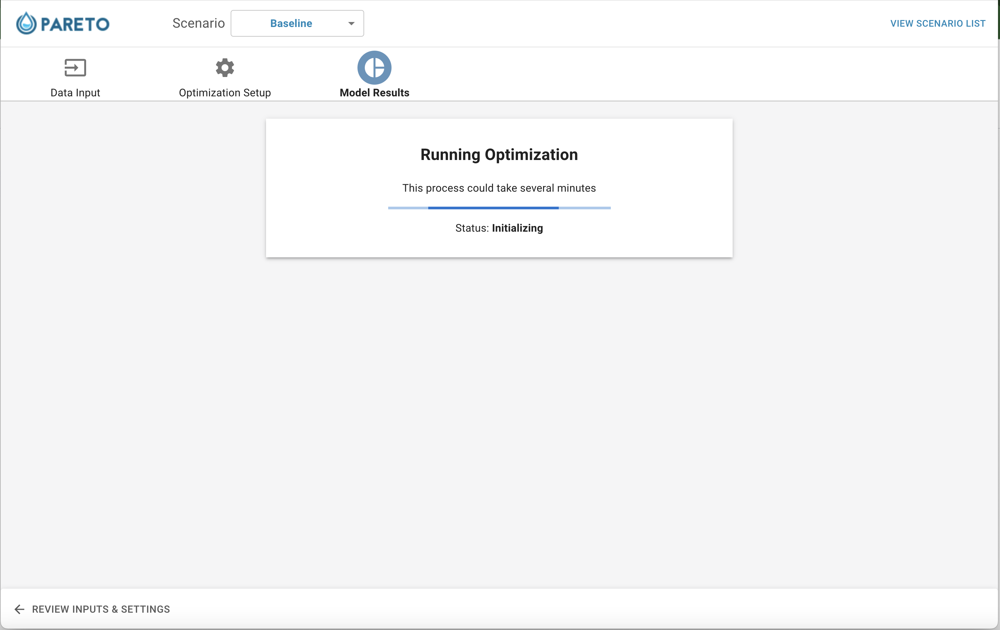
Step 8: : When the model is finished running, the KPI dashboard will be visible from the "model output" section:
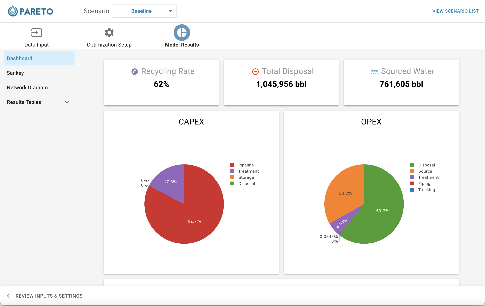
Step 9: Analyze the output by looking through tables and graphs, including the sankey diagram that interactively displays the distribution of produced water:
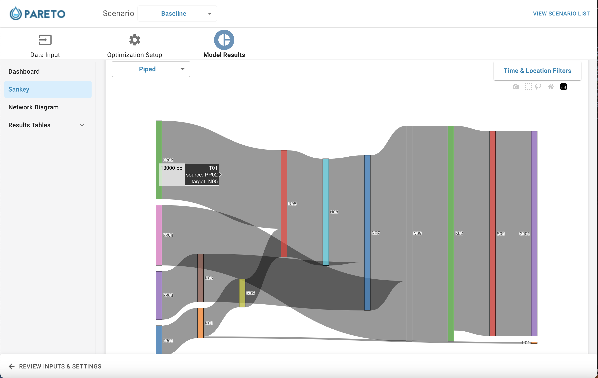
Step 10: If you are unhappy with any of PARETO's infrastructure decisions, feel free to override with your own decisions in the "infrastructure buildout" tab:
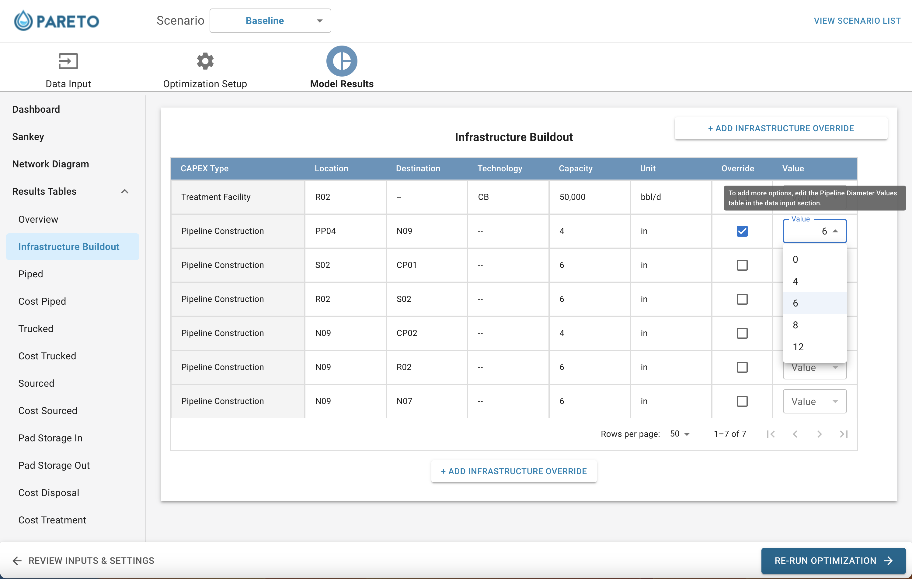
Step 11: Compare different scenarios by clicking on any of the compare icons from the scenario page:
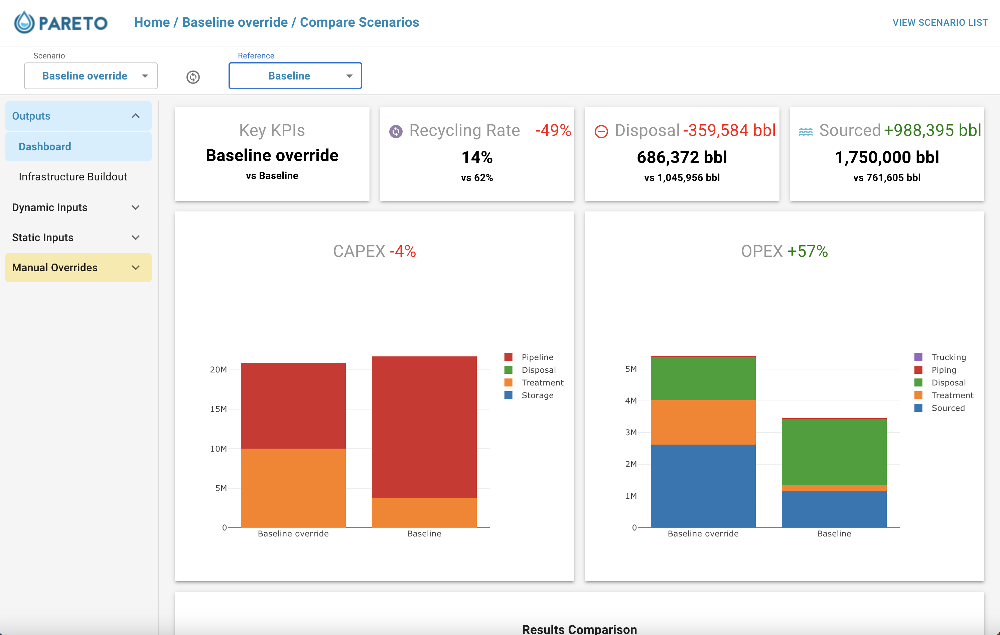